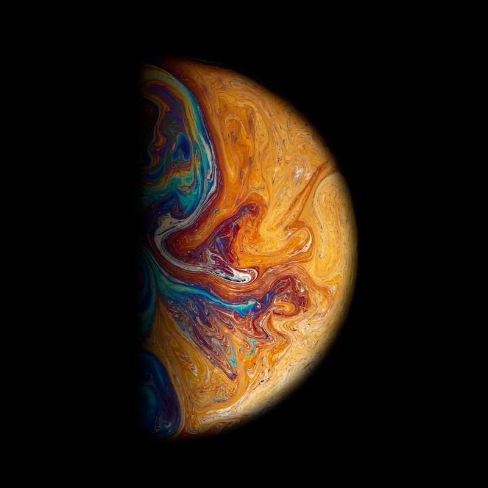
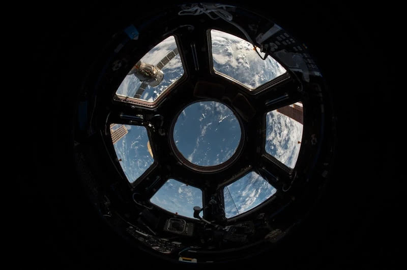

📅 Launched: July 2020
The Mars 2020 Perseverance rover mission is part of NASA's Mars Exploration Program, a long-term effort of robotic exploration of the Red Planet. The mission 'addresses high-. priority science goals for Mars exploration, including key questions about the potential for life on Mars.
Perseverance is designed to better understand the geology of Mars and seek signs of ancient life. The mission will collect and store a set of rock and soil samples that could be returned to Earth in the future. It will also test new technology to benefit future robotic and human exploration of Mars.
Since landing in Jezero Crater on February 18, 2021, Perseverance has traveled over 15 kilometers and collected 23 rock and soil samples. The rover successfully completed the first powered flight on another planet by deploying the Ingenuity helicopter, which exceeded expectations by completing 72 flights over nearly three years.




Launch Vehicle
Atlas V 541
Launch Site
Cape Canaveral Air Force Station, Florida
Landing Site
Jezero Crater, Mars
Mission Duration
At least 1 Mars year (about 687 Earth days)
Mass
1,025 kg (2,260 lbs)
Power Source
Multi-Mission Radioisotope Thermoelectric Generator (MMRTG)
Distance Traveled
28.5 km
Samples Collected
23 / 30
Sol (Mars Day)
1,089
Temperature
-63°C
Wind Speed
22 km/h
Explore other active missions in our solar system

© 2026 Cosmos Space Exploration. All rights reserved.
Designed by Vince